📍
Situation géographique
Banamba se situe au Mali, dans la région de Koulikoro. Voir sur la carte ↗
Découvrez Banamba, ses habitants, son histoire, ses initiatives et les informations utiles à la vie communale.
Découvrir la commune →Voir les actualitésUn espace de découverte et de partage d'informations sur la Commune rurale de Banamba, dans le cercle de Banamba au Mali.
Banamba se situe au Mali, dans la région de Koulikoro. Voir sur la carte ↗
La Commune rurale de Banamba a été créée le 4 novembre 1996 par la Loi n° 96-059/AN-RM portant création des communes en République du Mali, dans le cadre de la décentralisation territoriale.
Informations pratiques, initiatives citoyennes et participation au développement local.
Selon les informations historiques communiquées, feu Boua Simpara fut le premier maire de la Commune rurale de Banamba. Les dates exactes de son mandat restent à compléter et à valider.
Cette rubrique accueillera la liste vérifiée des villages et quartiers de la commune, leur présentation et leurs activités.
Photographies, cartes et fiches des localités seront ajoutées progressivement.
Présentation des services municipaux, des démarches administratives et des responsables, après vérification et autorisation de publication.
Informations institutionnelles et accueil du public.
État civil, demandes administratives et informations pratiques à compléter.
Coordonnées et fonctions à publier après confirmation.
Maire de la Commune rurale de Banamba
Chevalier de l’Ordre du Mérite (information fournie pour publication).
Découvrez quelques photographies illustrant ses activités administratives.
Chevalier de l’Ordre du Mérite — information communiquée pour publication.
2026 — Mérite d’Excellence de la Région de Koulikoro « Djandjo » (distinction reçue). Dans le cadre de la 4ᵉ édition de Festi Se-Vacances, OUSMANE SIMPARA a reçu cette distinction pour son engagement au service de la commune et sa contribution au développement local.
La cérémonie s’est tenue le samedi 26 septembre 2026, au vestibule des légitimités traditionnelles à Koulikoro, selon la confirmation communiquée.
Source : texte attribué à Koulikoro Kibaru, communiqué pour le site. La remise effective du prix a été confirmée par le contributeur du site.Présentation des personnes et fonctions communiquées pour ce portail. Les informations et autorisations de publication restent à confirmer auprès de la mairie.
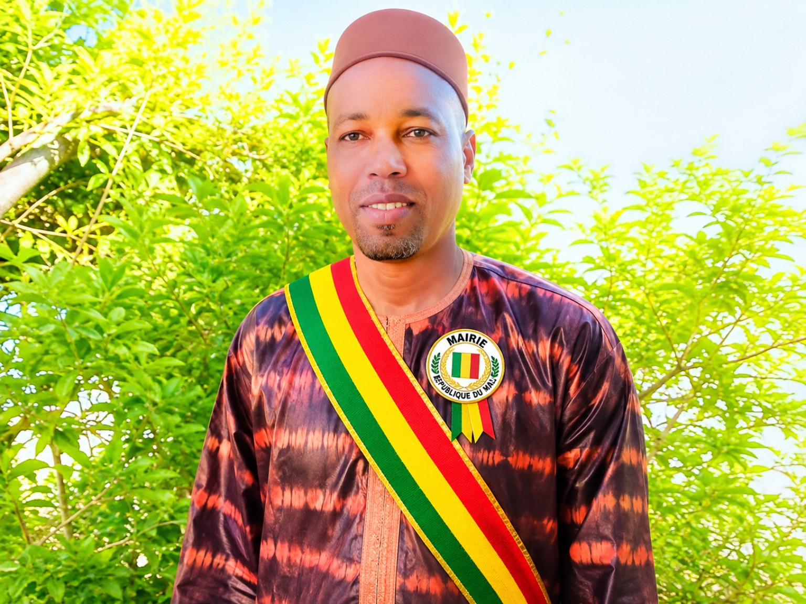
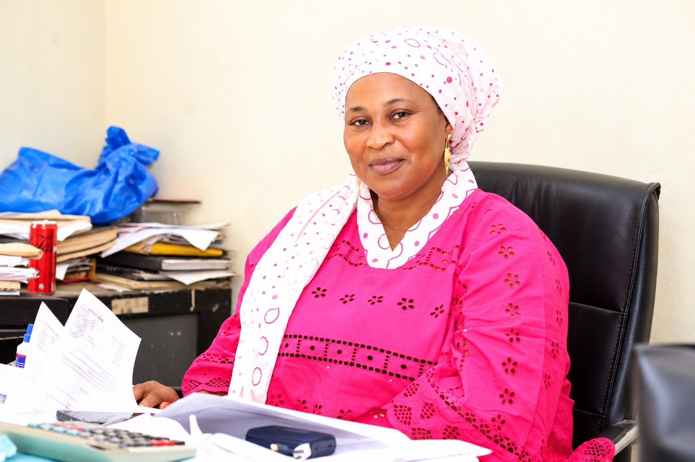
Deuxième adjointe au maire · Chargée de l’état civil
Chargé de l’éducation · Nom à confirmer
Secrétaire général
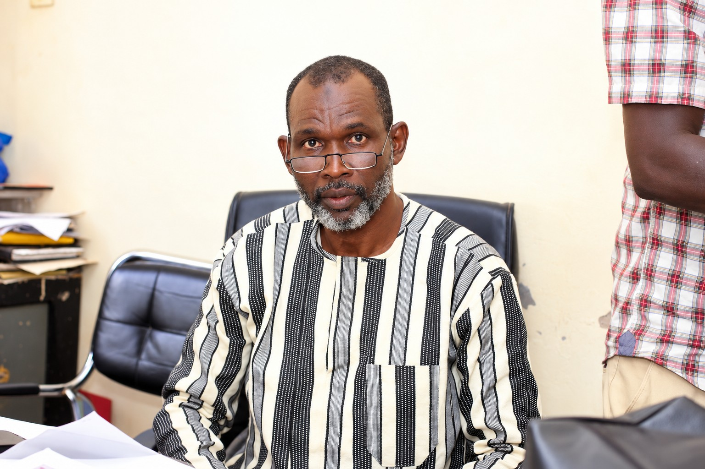
Régisseur de recettes
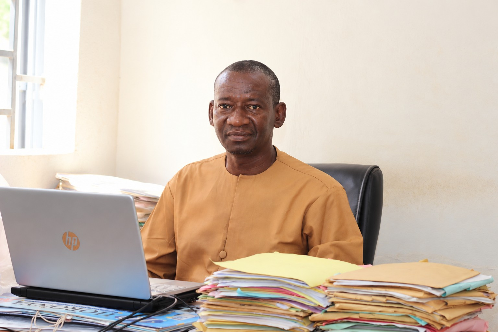
Chef du service financier et comptable
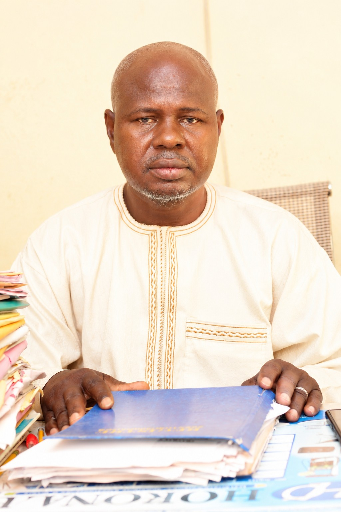
Chef du service administratif et juridique
Régisseur des dépenses
Chargé de l’état civil
Gardien de la mairie
Planton de la mairie
Conseiller communal
Photographie de groupe communiquée ; la personne concernée n’a pas encore été identifiée sur l’image.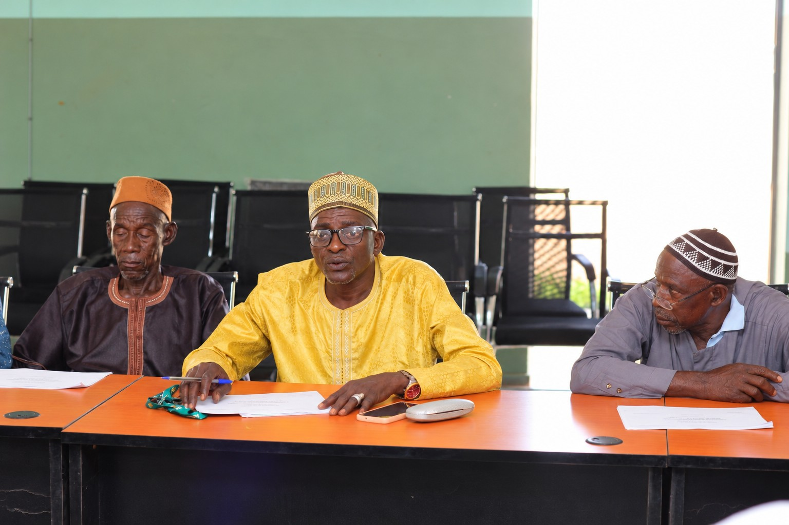
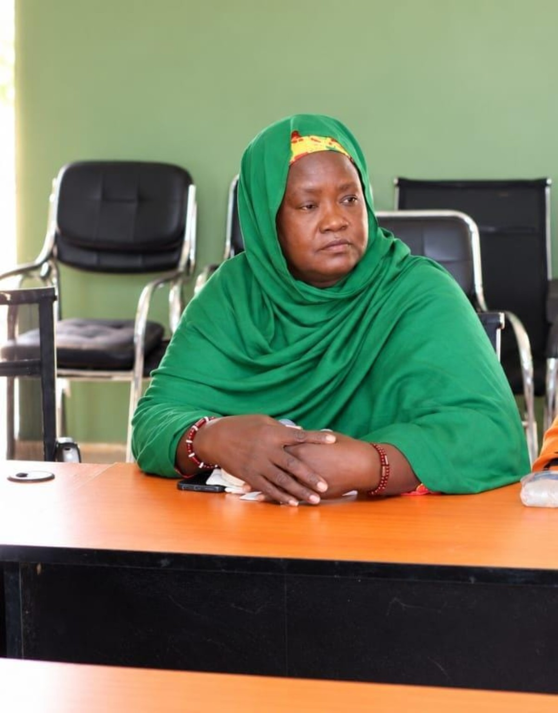
Conseillère communale
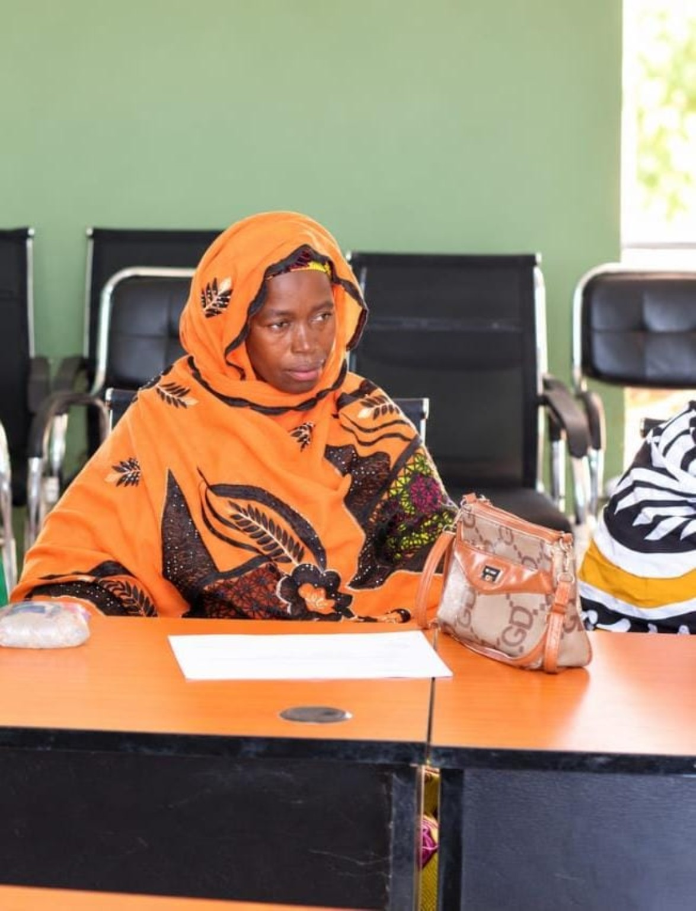
Conseillère communale
Les annonces communales pourront être publiées ici après validation.
Cette plateforme est en cours d'enrichissement. Les communiqués officiels seront publiés après validation de la mairie.
Une vitrine pour présenter les projets confirmés, les réalisations et les partenaires du développement communal.
Espace réservé aux projets vérifiés.
Espace réservé aux initiatives et services documentés.
Agriculture, commerce et activités locales à présenter.
Cette section tente de récupérer automatiquement un résumé de l'article « Banamba » sur Wikipédia en français. Wikipédia est une source externe indépendante, et non une source municipale officielle.
Consulter Wikipédia ↗Chargement du résumé depuis Wikipédia…
Source : Wikipédia, sous réserve de disponibilité.Photographies communiquées de la mairie de Banamba : entrée, cour, bâtiment et accès. Publication sous réserve de validation municipale.
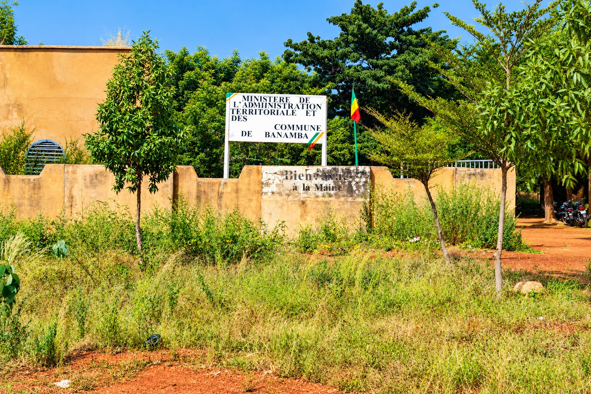
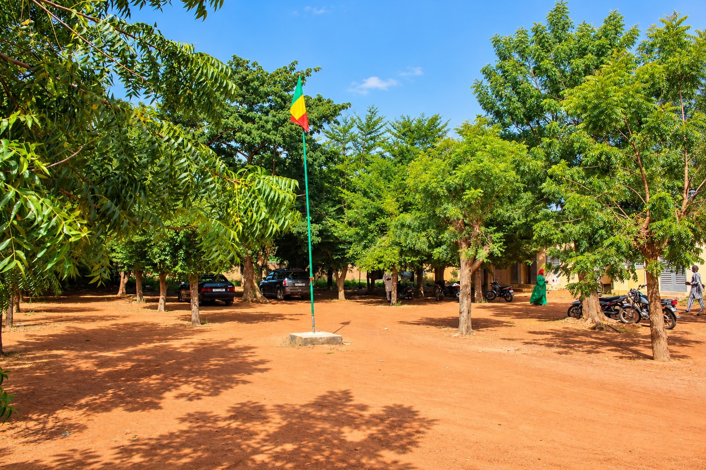
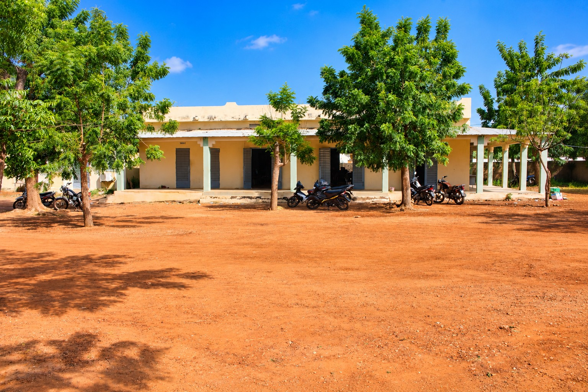
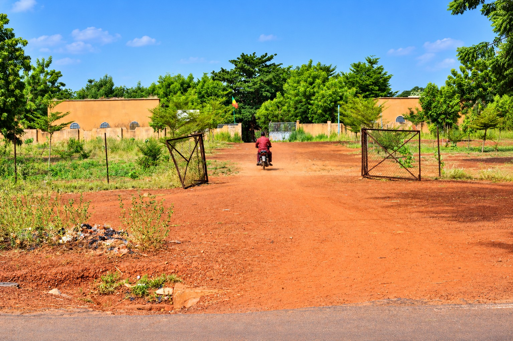
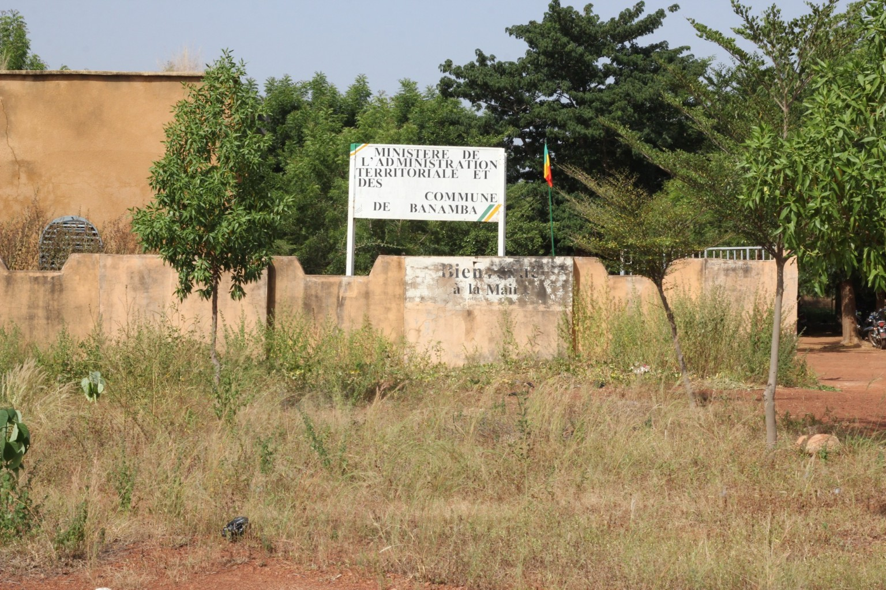
Commune rurale de Banamba
Cercle de Banamba · Mali
Les coordonnées officielles, horaires d'ouverture et contacts de la mairie seront affichés après vérification.
Mode démonstration uniquement : les textes ajoutés sont enregistrés localement dans ce navigateur et ne sont PAS visibles par les visiteurs. Aucun mot de passe sécurisé n'est fourni dans ce fichier statique.